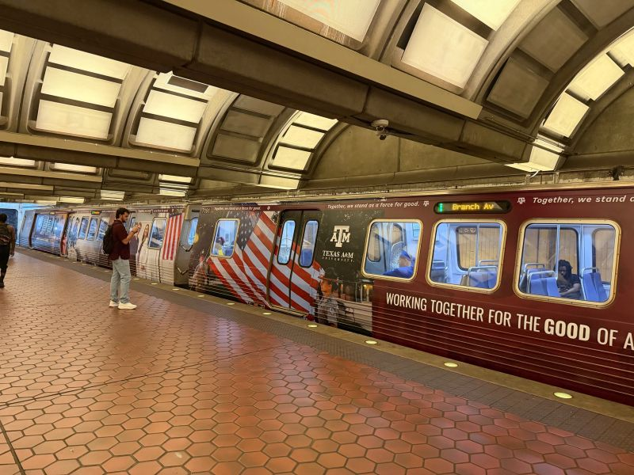
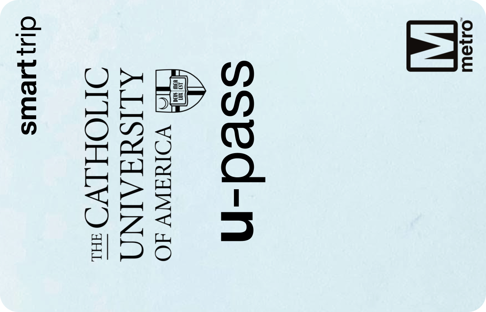
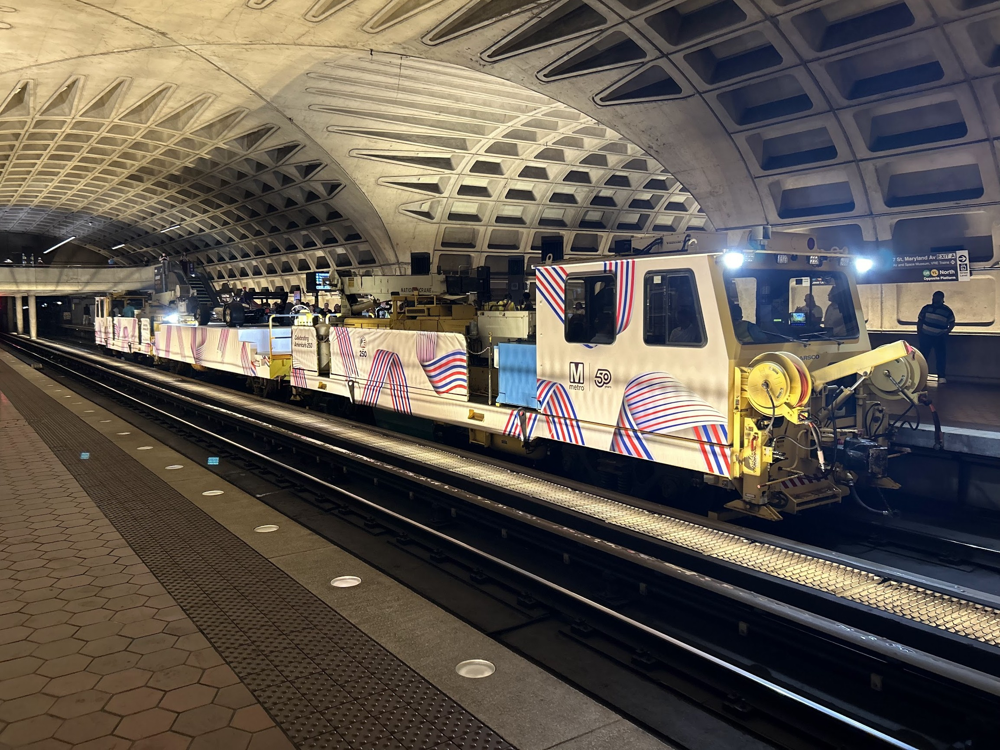

Welcome to MetroArchive
This website is focused on documenting history of the Washington Metro (WMATA), with a focus on rolling stock. It is always expanding and evolving.
Recent Site Updates



Site run and managed by MetroMaker.
Contact me:
Twitter: @DCMetroMaker
Instagram: @DCMetroMaker
Discord: @dcmetro326
Reddit: u/MetroMaker